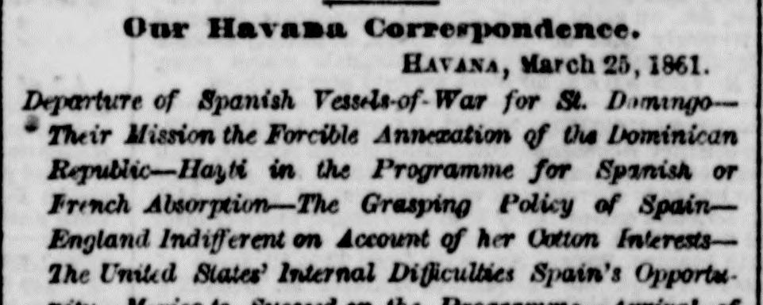
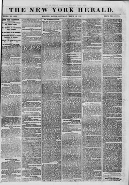

See the full pageVer la página completaOur Havana CorrespondenceNuestra correspondencia de La Habana
Havana, March 25, 1861La Habana, 25 de marzo de 1861
- Departure of Spanish Vessels-of-War for St. DomingoSalida de buques de guerra españoles hacia Santo Domingo
- Their Mission the Forcible Annexation of the Dominican RepublicSu misión: la anexión forzosa de la República Dominicana
- Hayti in the Programme for Spanish or French AbsorptionHaití en el programa de absorción española o francesa
- The Grasping Policy of SpainLa política codiciosa de España
- England Indifferent on Account of her Cotton InterestsInglaterra indiferente por sus intereses algodoneros
- The United States' Internal Difficulties Spain's OpportunityLas dificultades internas de los Estados Unidos, oportunidad de España
- Mexico to Succeed on the ProgrammeMéxico, el siguiente en el programa
- Arrival of the United States War Steamer MohawkLlegada del vapor de guerra estadounidense Mohawk
- State of the Eminent MerchantEstado de salud del eminente comerciante
- Suicides of CooliesSuicidios de culíes
- Arrival of the Steamer PanamaLlegada del vapor Panamá
- Departure of Miramon for Spain, via New YorkSalida de Miramón hacia España, vía Nueva York
- Markets, &c.Mercados, etc.
The New York Herald reported on March 30, 1861, that the Spanish steam frigate Blanca departed Havana for St. Domingo carrying troops, sailors, and marines to enforce Spanish policy and overcome any opposition from the government or people of the Dominican Republic. It further noted that the Spanish steam frigates Barenguela and Petronila were also scheduled to leave for the same destination with war fittings, munitions, and army troops to compel respect for Spanish power and dictation.The New York Herald informó el 30 de marzo de 1861 que la fragata de vapor española Blanca zarpó de La Habana rumbo a Santo Domingo con tropas, marineros e infantes de marina para imponer la política española y doblegar cualquier resistencia del gobierno o del pueblo de la República Dominicana. Señaló además que las fragatas de vapor españolas Barenguela y Petronila también tenían previsto partir hacia el mismo destino con pertrechos de guerra, municiones y tropas del ejército para obligar al acatamiento del poder y los dictados españoles.
FULL TEXT:TRADUCCIÓN:
The Spanish steam frigate Blanca, with a full complement of troops, and the steam sloop Isabel, left our anchorage in our harbor Saturday evening last for St. Domingo, having in view a mission of an aggressive policy and to defeat any opposition that might be made by the government or people of the Dominican Republic to the proposed annexation of Spain. Many thousands of people were upon the wharf to cheer this enterprise for the restoration of the banner of the old and haughty Spanish power upon their ancient domain, where were impressed almost the first footsteps of the pioneers of Spanish civilization. In the wake of the ships above mentioned the steam frigate Berenguela and Petronila, also heavily armed and with many hundred men drawn from the army, to compel respect for Spanish power and to enforce obedience, it is said that five or six thousand soldiers are to be sent to St. Domingo to be distributed as may be signified by the Spanish government, by a quiet introduction of the people, ostensibly as the home and field for their services by grants of lands which were to be given to them, but in reality to be distributed at government where they pretend to seek homes and prosperity.La fragata de vapor española Blanca, con su dotación completa de tropas, y la balandra de vapor Isabel, salieron de su fondeadero en nuestro puerto el sábado pasado por la noche rumbo a Santo Domingo, con la misión de ejecutar una política agresiva y derrotar cualquier oposición que el gobierno o el pueblo de la República Dominicana pudieran hacer a la proyectada anexión por España. Miles de personas se congregaron en el muelle para aclamar esta empresa de restauración del pabellón del viejo y altivo poder español sobre su antiguo dominio, donde quedaron impresas casi las primeras huellas de los pioneros de la civilización española. Tras los buques mencionados siguen las fragatas de vapor Berenguela y Petronila, también fuertemente armadas y con muchos cientos de soldados del ejército, para imponer respeto al poder español y hacer cumplir la obediencia; se dice que serán enviados a Santo Domingo cinco o seis mil soldados, para ser distribuidos según disponga el gobierno español, introducidos discretamente, en apariencia como quienes buscan allí hogar y campo para sus servicios mediante concesiones de tierras que se les darían, pero en realidad para quedar distribuidos al servicio del gobierno en los lugares donde aparentan buscar hogar y prosperidad.
Every demonstration tending to territorial acquisition on the part of Spain in St. Domingo, from the reports of those who have recently returned from the city of St. Domingo, to defeat the policy of the United States—the Monroe doctrine—is being carried out with every good faith with the Dominican republic, through their agents here. It is said that the terms of annexation and support, after the same had been thoroughly discussed and agreed upon by the high contracting parties—the one to surrender and the other to receive—have been made to include the following:—To recognize the Spanish officers of high rank in the army and navy, and to continue them in their respective positions, as heretofore, for the purpose of future action to construct a case against the republic of Hayti to be followed by annexation.Toda demostración tendiente a la adquisición territorial por parte de España en Santo Domingo —según los informes de quienes han regresado recientemente de la ciudad de Santo Domingo— se está llevando a cabo de buena fe con la república dominicana, por medio de sus agentes aquí, con el fin de derrotar la política de los Estados Unidos: la doctrina Monroe. Se dice que los términos de la anexión y del apoyo, después de haber sido discutidos a fondo y acordados por las altas partes contratantes —la una para entregar y la otra para recibir— incluyen lo siguiente: reconocer a los oficiales españoles de alto rango del ejército y de la armada, y mantenerlos en sus respectivos puestos, como hasta ahora, con el propósito de preparar en el futuro un caso contra la república de Haití, al que seguiría su anexión.
Through the facts, views and deductions of your correspondent have been subsequently fully verified and confirmed, and the arrangements, although not officially made public, are known to be the current news. Effectual steps have been taken to check or prevent the slightest opposition on the part of the people to this change of jurisdiction. These demonstrations of a Power you have so often and so justly characterized as a "dying" country by their own assertions are of great importance at this time, as they are to share the island of Hayti between an upstart and a throne. The Dominican republic, it is said, is to be the share of Spain, and the republic of Hayti is to share the fate of her sister republic under the wake of Spanish policy, by previous understanding with the French government.Los hechos, opiniones y deducciones de su corresponsal han sido posteriormente verificados y confirmados por completo, y los arreglos, aunque no se han hecho públicos de manera oficial, son ya noticia corriente. Se han tomado medidas eficaces para contener o impedir la menor oposición por parte del pueblo a este cambio de jurisdicción. Estas demostraciones de una potencia que ustedes han caracterizado tan a menudo y con tanta justicia, según sus propias afirmaciones, como un país «moribundo», revisten gran importancia en este momento, pues se proponen repartir la isla entre un usurpador y un trono. La república dominicana, se dice, será la parte de España, y la república de Haití correrá la suerte de su república hermana bajo la estela de la política española, por acuerdo previo con el gobierno francés.
England is not, under this view of advantage for Spain, to be an idle spectator, but she is under the influence of her yarns, when a free people pass under the yoke of a power where the most cruel and unmitigated power, where slavery and slave traffic are to be found in their most hideous forms. She will not, she cannot, interfere with the policy of Spain, because her England is, still, with folded arms, and says nothing against the policy of Spain, because she is the principal consumer of the world, for none of which can be substituted for the southern products of your heritage. How will it be with the growing prosperity and power of the people of the United States? Spain sees her opportunity, and she will not only take St. Domingo, but her designs to annex Mexico she only held in restraint until she saw your internal difficulties, and then her subsequent movements would flow towards the shores of Mexico.Inglaterra no será, ante esta perspectiva de ventaja para España, una espectadora ociosa; pero se halla bajo la influencia de sus intereses textiles, mientras un pueblo libre pasa bajo el yugo de una potencia donde impera el poder más cruel y sin atenuantes, donde la esclavitud y el tráfico de esclavos se encuentran en sus formas más horrendas. No querrá, no podrá, interferir en la política de España, porque Inglaterra permanece aún con los brazos cruzados y nada dice contra esa política, pues es la principal consumidora del mundo de unos productos del sur —herencia de ustedes— para los que no existe sustituto. ¿Qué será de la creciente prosperidad y del poder del pueblo de los Estados Unidos? España ve su oportunidad, y no solo tomará Santo Domingo: sus designios de anexar México solo los contuvo hasta ver las dificultades internas de ustedes, y entonces sus movimientos siguientes se dirigirían hacia las costas de México.
The political disturbances in the United States showed that the time was ripe for the aggrandizement of Spain, and hence the prompt action she has taken of it. But what will be the result hereafter? Are not all the people, in or out of the Union, interested in the cause of liberty—in political and social rights? and is there not some power to check the aggressive policy of Spain and compel the respect of foreign Powers?Los disturbios políticos en los Estados Unidos mostraron que el momento era propicio para el engrandecimiento de España, y de ahí la prontitud de su acción. Pero ¿cuál será el resultado en adelante? ¿No están todos los pueblos, dentro o fuera de la Unión, interesados en la causa de la libertad, en los derechos políticos y sociales? ¿Y no hay alguna potencia capaz de contener la política agresiva de España y obligar al respeto de las potencias extranjeras?
The future is soon to show us these things. Who is to control? The colored race will cry aloud if Spain controls the island of Hayti, for they know that their freedom will not be likely to receive any recognition from Spanish power.El futuro pronto nos mostrará estas cosas. ¿Quién ha de dominar? La raza de color alzará la voz si España domina la isla, porque sabe que su libertad difícilmente recibirá reconocimiento alguno del poder español.
The United States war steamer Mohawk, Lieutenant Commanding T. A. Craven, arrived here on the 20th inst. from Key West.El vapor de guerra estadounidense Mohawk, al mando del teniente T. A. Craven, llegó aquí el día 20 del corriente, procedente de Cayo Hueso.
The health of the eminent merchant, Mr. Drake, is said to be somewhat improved.Se dice que la salud del eminente comerciante, el señor Drake, ha mejorado algo.
The suicides of the coolies continue to be of frequent occurrence, and it is said that no less than seven or eight have occurred within the last few days.Los suicidios de los culíes continúan siendo frecuentes, y se dice que en los últimos días han ocurrido no menos de siete u ocho.
The steamship Panama, from New York, arrived here on the 21st inst.El vapor Panamá, procedente de Nueva York, llegó aquí el 21 del corriente.
General Miramon, ex-President of Mexico, and family, left here on the 22d inst. in the Spanish mail steamer for Cadiz, via New York.El general Miramón, expresidente de México, y su familia, salieron de aquí el 22 del corriente en el vapor correo español rumbo a Cádiz, vía Nueva York.
The news of the political sentiments and action of the new President of the United States of America has been received here with much interest, and the dark dreams of fanatical raids upon our peaceful domain have passed with the shadows of the night. Circumstances have occurred in the last few years to leave a very deep and many painful shadows following in the trail of more than one of your expeditions, and they were not likely to wind up a good many more on the same string; yet there is now room to hope for the better and we will take it. The business circle among those interested in the sugar market is not as active as it has been for some time, and the prices have not been as well sustained as they were at our last advice. The sugar market at the close of the week is very dull, and the prices are as follows for sugar:—No. 12, 4 1/2 rs.; No. 11, 4 1/4 rs.; No. 10, 4 rs.; No. 9, 3 3/4 rs.Las noticias sobre los sentimientos políticos y la actuación del nuevo presidente de los Estados Unidos de América se han recibido aquí con mucho interés, y los oscuros sueños de incursiones fanáticas sobre nuestro pacífico dominio se han desvanecido con las sombras de la noche. En los últimos años han ocurrido circunstancias que han dejado sombras muy profundas y dolorosas tras más de una de las expediciones de ustedes, y no parecía probable que se sumaran muchas más a la misma cuerda; sin embargo, ahora hay lugar para esperar tiempos mejores, y así lo aceptamos. El círculo comercial entre los interesados en el mercado del azúcar no está tan activo como lo ha estado durante algún tiempo, y los precios no se han sostenido tan bien como en nuestro último aviso. El mercado del azúcar al cierre de la semana está muy flojo, y los precios son los siguientes: n.º 12, 4 1/2 rs.; n.º 11, 4 1/4 rs.; n.º 10, 4 rs.; n.º 9, 3 3/4 rs.
Molasses in net tierces demand at 1 3/4 a 2 reals per keg of 5 1/2 gallons. Exchange on London, 14 1/2 a 15 per cent premium; on New York, 2 1/2 a 3 per cent discount. The shipments of sugars and molasses to a considerable extent have been made to the United States during the last few weeks. Freights—Demand on declining, but will probably be better as the season advances.La melaza en barriles netos se cotiza a demanda de 1 3/4 a 2 reales por barril de 5 1/2 galones. Cambio sobre Londres, de 14 1/2 a 15 por ciento de prima; sobre Nueva York, de 2 1/2 a 3 por ciento de descuento. Los embarques de azúcares y melazas hacia los Estados Unidos han sido considerables durante las últimas semanas. Fletes: la demanda está en declive, pero probablemente mejorará a medida que avance la temporada.
The New York Herald. New York, March 30, 1861.
See the original at the Library of CongressVer el original en la Biblioteca del Congreso
Also published as the New York Daily HeraldTambién publicado como New York Daily Herald
Published by: James Gordon BennettPublicado por: James Gordon Bennett
Edition: Morning Edition (Edition 1)Edición: edición de la mañana (edición 1)
Page: 1, in an 8-page issuePágina: 1, en un ejemplar de 8 páginas
Frequency: daily (1840–1920)Frecuencia: diario (1840–1920)
Collection: Chronicling America, Library of CongressColección: Chronicling America, de la Biblioteca del Congreso
LCCN: sn83030313LCCN: sn83030313
ISSN: 2474-3224ISSN: 2474-3224
OCLC: 9467138OCLC: 9467138
Call Number: Newspaper E457.5 .N3Signatura (Call Number): Newspaper E457.5 .N3
Rights: public domain, according to the Library of CongressDerechos: dominio público, según la Biblioteca del Congreso